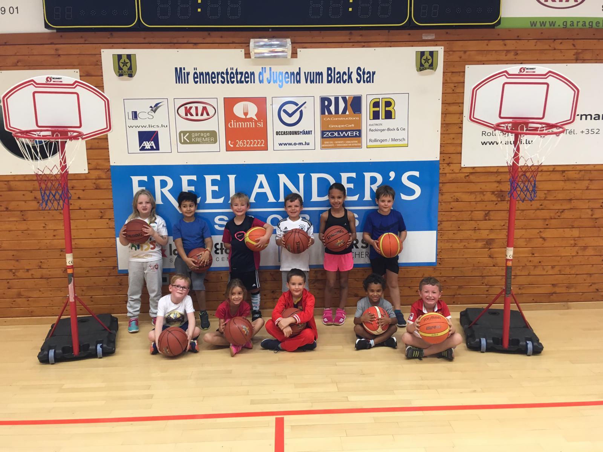

Eng Passioun, e Club, eng Famill — zanter 1934 zu Miersch doheem. Vum Babybasket bis Senioren hu mir fir all Alter eng Ekipp, an all nei Gesiicht ass wëllkomm, ob mat oder ouni Erfarung.
Vun de Klengsten bis bei d'Senioren — jiddereen fënnt seng Kategorie.
E Club mat Traditioun an enger staarker Communautéit zu Miersch.
Ob fir Spaass, fir kompetitiv ze spillen oder als Schidsrichter — bei eis ass Plaz fir jiddereen.
Klickt op eng Ekipp fir méi iwwer Informatiounen ze kréien.
Éischt Schrëtt mam Ball
Gebuer no 2016Mixtes
Gebuer 2015 – 2016Eng E-Mail mat Numm, Alter an der gewënschter Ekipp un de Comité.
De Comité oder den Trainer vun der Ekipp mellt sech fir all weider Detailer ze klären.
Laanschtkommen, Mattrainéieren an d'Ambiance kenneléieren.